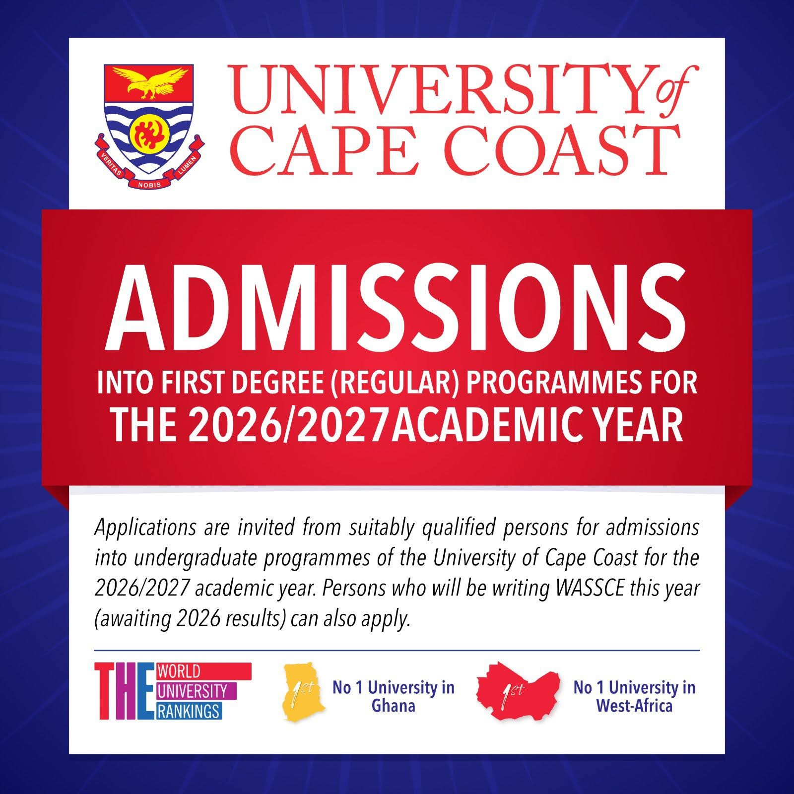

University of Cape Coast Opens 2026/2027 Undergraduate Admissions

UCC is now receiving applications from candidates awaiting 2026 WASSCE results and those with existing results. E-voucher sales are available at major banks and GhanaDotCom.
Read More
Apply Now
GES Recruitment Boom: 8,200 New Teaching and Faculty Roles Set to Transform Ghana's Education Sector
Government has approved the recruitment of 7,000 teachers and 1,200 tertiary faculty members, creating a major opportunity for trained graduates across Ghana.
Read More
Priority for Rural Service: Why Willingness to Serve in Deprived Areas Could Boost Your Chances
Applicants prepared to work in underserved communities may receive priority as the Ministry moves to close staffing gaps where they matter most.
Read More